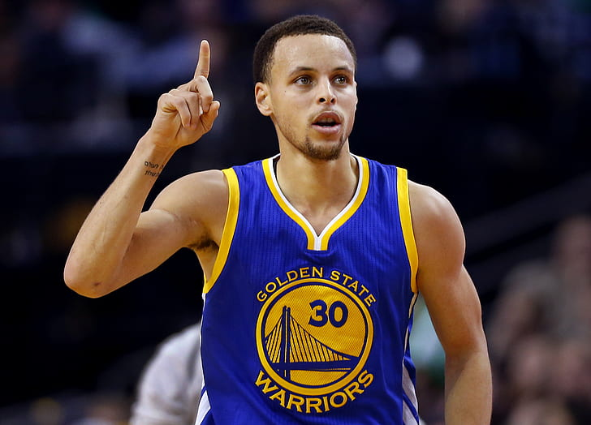

En esta Pagina vamos a contarles acerca de uno de los mejores jugadores de la historia de la NBA
Wardell Stephen Curry II.
Tambien vamos a poder encontrar un par de sus momentos mas destacados en lo que va de su carrera en el apartado de HIGHLIGHTS ☝️☝️
Van a tener una seccion para que puedan dejarnos sus comentarios e ideas para mejorar, ya que esto me serviría un montón 🙂
